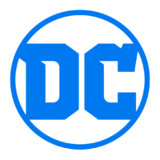

DC Comics (основано в 1934 как National Allied Publications) — одно из крупнейших и наиболее популярных издательств комиксов. Издательство было куплено компанией «Warner Bros. Entertainment» в 1969[2]. «DC Comics» издают продукцию, характеризующуюся наличием большого количества широко известных персонажей. В том числе «Супермен», «Бэтмен», «Чудо-женщина», «Зелёный Фонарь», «Флэш», «Аквамен», «Шазам», «Человек-ястреб», «Зелёная стрела», «Джон Константин», «Затанна», «Болотная тварь», «Огненный Шторм», «Чёрная Канарейка», «Старфаер», «Найтвинг», «Бэтгёрл», «Супергёрл», «Марсианский Охотник», «Атом», «Спектр», «Киборг», «Роршах», «Робин», «Бустер Голд», «Синий Жук», «Джеймс Гордон», «Рэйвен», и др. В вымышленной вселенной «DC» также имеются команды, такие, как «Лига Справедливости», «Общество Справедливости Америки», «Тёмная Лига Справедливости», «Юные Титаны», «Хранители», «Отряд самоубийц», «Негодяи». И известные злодеи, такие как «Джокер», «Лекс Лютор», «Женщина-кошка», «Дарксайд», «Ра'с аль Гул», «Детстроук», «Харли Квинн», «Синестро», «Профессор Зум», «Чёрный Адам», «Лобо», «Дэдшот», «Бэйн», «Капитан Холод», «Красный колпак», «Пугало», «Ядовитый Плющ», «Мистер Фриз», «Киллер Фрост», «Двуликий», «Пингвин», «Глиноликий», «Загадочник», «Хаш», «Бизарро», «Повелитель Океана», «Думсдэй» и «Брейниак»[3].
Аббревиатура «DC» перешла от популярнейшей серии издательства «Detective Comics» и вскоре стала официальным названием компании[4]. Штаб-квартира «DC Comics» находилась по адресу 1700 Broadway, New York[5], но в 2015 г. они переместили свою штаб-квартиру в Бербанк, Калифорния.
Также по мотивам вселенной «DC» есть MMOACG (mmo action game)-игра «DC Universe Online», где игроки могут создать своего собственного супергероя, пользуясь набором предложенных характеристик.
